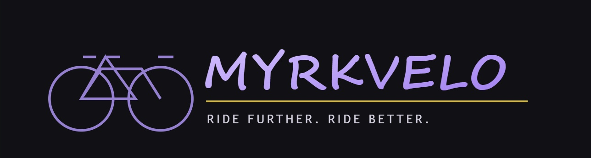

O firmie MYRKVELO
MYRKVELO to hurtownia rowerów i części rowerowych w Gdańsku. Zaopatrujemy sklepy i serwisy, a także sprzedajemy sprzęt rowerzystom.
W ofercie mamy rowery górskie, miejskie i szosowe. Są też rowery elektryczne.
Przykładowy model to MTB29 z kołem o rozmiarze 29″.

Sprzedajemy także części, na przykład łańcuchy, hamulce, przerzutki i opony.
Współpracujemy ze sklepami i serwisami rowerowymi. Pomagamy dobrać potrzebny sprzęt.
Klient może kupić u nas także kask, oświetlenie i inne akcesoria.
Firma oferuje też części zamienne i akcesoria rowerowe.
Nasza działalność
- Sprzedaż rowerów górskich, miejskich i szosowych.
- Sprzedaż rowerów elektrycznych.
- Hurtowa sprzedaż części rowerowych.
- Akcesoria i wyposażenie rowerzystów.
- Współpraca ze sklepami i serwisami rowerowymi.
- Doradztwo w wyborze sprzętu rowerowego.